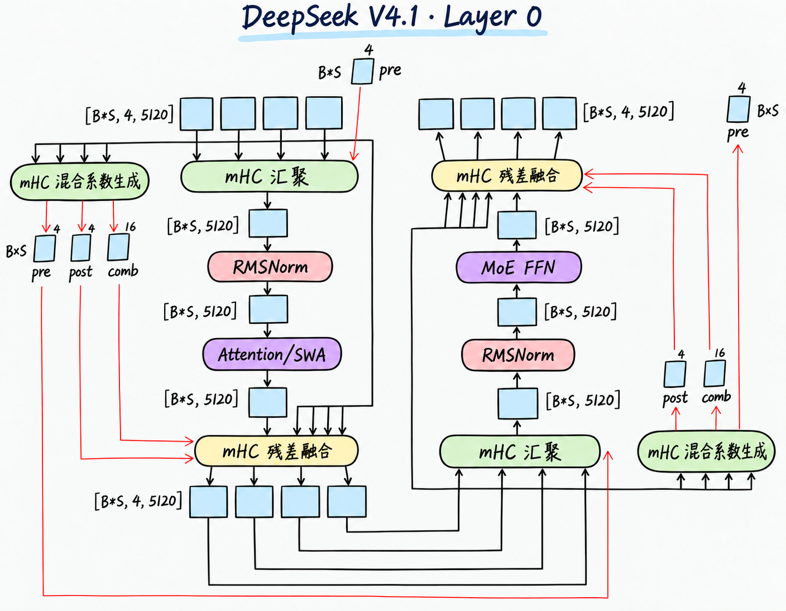
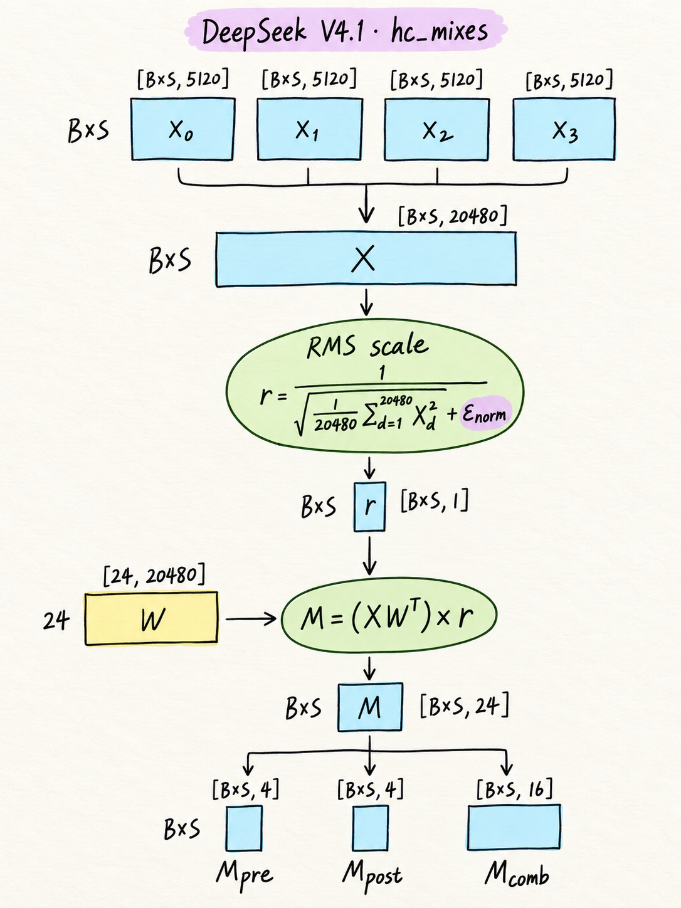
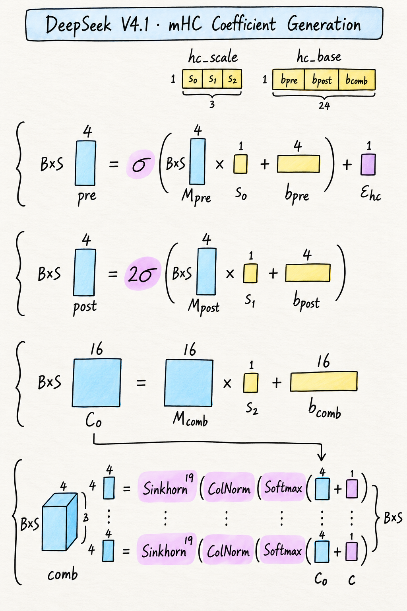
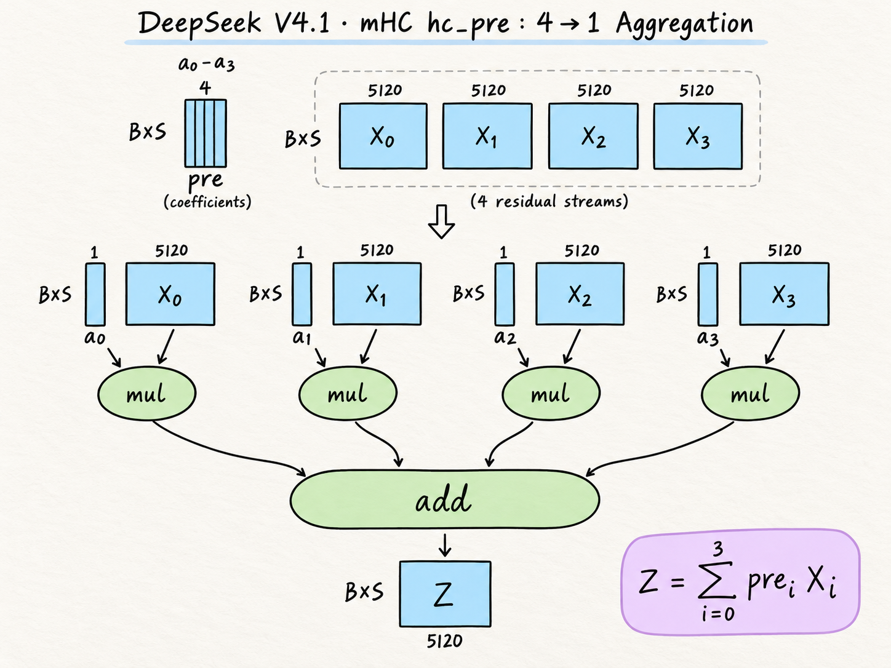
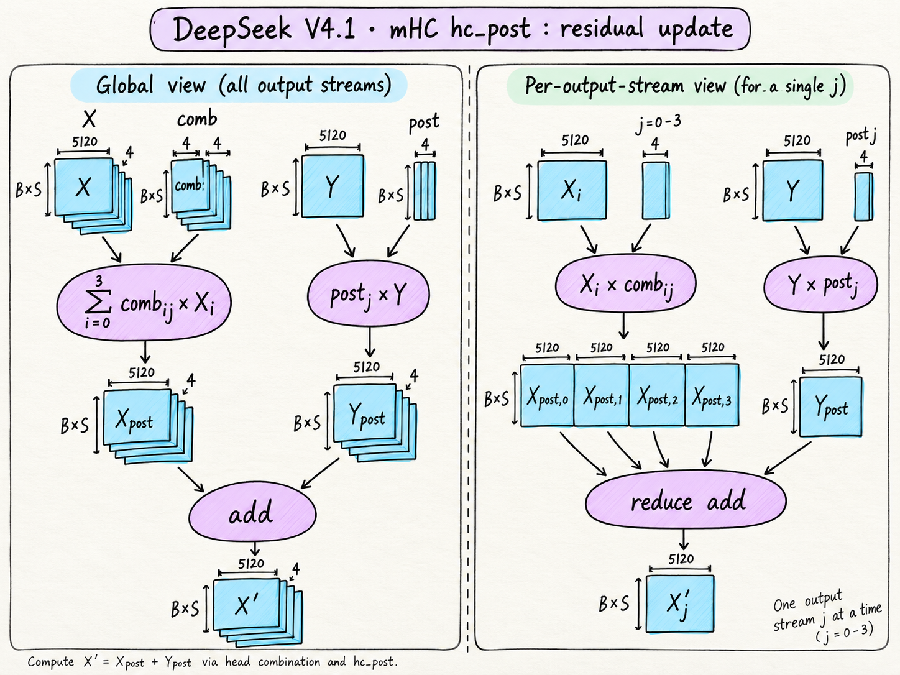

Layer 0：从四路残差到局部注意力与 MoE
本篇以语言主干第 0 层为基准，拆解一个纯局部注意力层。它包含两个串行子层：局部 Attention（SWA）与 MoE 前馈网络。局部 Attention 从同一会话最近的窗口中汇入上下文；MoE 对各 token 的特征进行专家前馈变换；mHC 在同一个 token 的四路残差之间汇聚、混合与写入，连接这两个子层。四路残差不会让 Attention 或 MoE 各运行四遍：每个子层接收汇聚后的单路输入。配置 · Block 定义
本文按整层数据流展开，说明 mHC 的系数生成、四路汇聚与残差融合，再介绍局部 Attention 和 MoE 的数学计算。量化存储、kernel 调度与性能估算放在后续文章。
1. 先固定符号与输入输出
| 记号 | 本文含义 |
|---|---|
B |
独立会话的 batch 数 |
S |
本次处理的 token 数 |
B*S |
逐 token 独立计算时展平的行数，不表示合并会话 |
D=5120 |
每路隐藏维度 |
H=4 |
mHC 残差流数，不是注意力头数 |
X、X' |
子层入口与出口的四路残差，均为 [B*S,4,5120] |
Z、Y |
汇聚得到的单路输入、子层的单路输出，均为 [B*S,5120] |
线性权重统一按 [输出维度,输入维度] 写，乘法使用 。层号、流编号从 0 开始。参数量是逻辑参数个数，不是量化后的字节数；运行时系数与固定常数不计作可学习权重。
在本文的文本输入场景中，进入 Layer 0 前，每个 token 的 embedding 被复制为四路，形成 X:[B*S,4,5120]。四路初始值相同；初始汇聚系数为 pre_cur=[1,0,0,0]，因此首次汇聚直接取第 0 路，得到原始 embedding。四路随后通过残差混合和子层输出写入继续更新，后续不要求它们始终相同。
2. 八个主模块与两条残差旁路

图 1 · 左侧从上向下计算 Attention，底部四路结果接到右侧，再从下向上计算 MoE。两侧的混合系数生成分支读取各自子层入口的四路残差。
| 顺序 | 主模块 | 输入 → 输出 |
|---|---|---|
| ① | Attention 的 mHC 汇聚 | [B*S,4,5120] → [B*S,5120] |
| ② | Attention 入口 RMSNorm | [B*S,5120] → [B*S,5120] |
| ③ | 局部 Attention / SWA | [B*S,5120] → [B*S,5120] |
| ④ | Attention 的 mHC 残差融合 | 单路输出＋本子层原四路残差 → [B*S,4,5120] |
| ⑤ | MoE 的 mHC 汇聚 | [B*S,4,5120] → [B*S,5120] |
| ⑥ | MoE 入口 RMSNorm | [B*S,5120] → [B*S,5120] |
| ⑦ | MoE FFN | [B*S,5120] → [B*S,5120] |
| ⑧ | MoE 的 mHC 残差融合 | 单路输出＋本子层原四路残差 → [B*S,4,5120] |
八模块指残差主线上的八个阶段；两套混合系数生成器作为旁路计算单独展开，不计入这八项。hc_pre、hc_post 分别是汇聚与残差融合操作，pre、post 是它们使用的系数；hc_post 同时读取 post 和 comb。
四路残差在入口分出旁路，一直保留到该子层出口。MoE 的“原四路”是 Attention 融合后的结果，不是整层最初的输入。第 0 层没有全局 KV 分支与 Engram；其他层的差异另文处理。
图 1 阅读补充：顶部输入
pre在第 0 层首次汇聚时不是来自更早的层，而是每个 token 固定为[1,0,0,0]。图中comb旁的 16 表示每个 token 的元素个数，逻辑 shape 为[B*S,4,4]。
Layer 0 的出口包含更新后的四路残差 [B*S,4,5120]，以及 MoE 侧生成、供 Layer 1 Attention 使用的 pre_next:[B*S,4]。
3. mHC：系数生成、汇聚与残差融合
mHC 将四路残差与一个子层连接起来：pre 将四路汇聚成该子层的一路输入；post 控制子层输出写入各路的强度；comb 重新混合保留的四路残差。系数由输入动态生成，投影权重 hc_fn、三个 hc_scale 标量及 hc_base 向量是可学习参数。Attention 和 MoE 各有一套独立的系数生成参数。mHC 对本次 B*S 个 token 独立运算，不读取历史 token。
本文采用 Single-Pass 时序：当前子层用已准备好的 pre_cur 做汇聚；当前生成器产生的 pre_next 用于下一个子层，而 post 和 comb 用于当前子层出口。下文先解释三类系数的数学计算，3.5 再列出完整使用位置。
| 操作 | 输入 | 输出 |
|---|---|---|
| 混合系数生成 | 当前四路 X [B*S,4,5120] |
pre_next:[B*S,4]、post:[B*S,4]、comb:[B*S,4,4] |
汇聚 hc_pre |
当前四路 X 与已有 pre_cur:[B*S,4] |
单路 Z [B*S,5120] |
残差融合 hc_post |
原四路 X、子层输出 Y [B*S,5120]、本次 post/comb |
新四路 X’ [B*S,4,5120] |
系数生成旁路的 20480 → 24 只产生混合系数，不是把主数据压成 24 维；原四路 X 仍然保留到当前子层出口。pre_next 根据当前入口 X 生成，却作用于下一个子层收到的 X’。例如 Attention 入口生成的 pre，作用于 Attention 残差融合后的四路，供 MoE 汇聚。这里的“下一个”是同一批 token 的下一子层，不是下一次生成的 token。
3.1 系数生成前半段：四路 X → raw mixes M

图 2 · 每个 token 的四路共 20480 个元素参与一个归一化统计，再投影成 24 个 raw 值。公式中的投影仍然读取展平后的 X，不能只把 r 作为输入。
将 展平为 。对 token ，展平下标 ：
r 对每个 token 是一个标量。在精确算术下， 与 相等，因此可以将其理解为对四路展平输入做 RMS 缩放后再投影。
实现注：参考代码先完成投影，再沿 24 维广播乘以
r；浮点运算顺序可能带来舍入差异。
| 对象 | shape | 性质 |
|---|---|---|
[B*S,1] |
当前输入算出的缩放因子，沿 24 维广播 | |
/ hc_fn |
[24,20480] |
可学习投影 |
/ mixes |
[B*S,24] |
运行时 raw mixes |
| 标量， | 固定常数 |
这里没有独立的可学习 RMSNorm 缩放向量。 按最后一维分为 、 和 。
3.2 系数生成后半段：M → pre_next / post / comb

图 3 · hc_scale 的三个标量分别作用于三组 raw mixes；hc_base 按 4＋4＋16 拆分。每个 token 最终获得两个 4 维向量和一个 4×4 矩阵。
定义可学习参数：，、、。这些参数对所有 token 共用，沿 token 维广播。本节使用解释性名称 pre_next，对应源码返回值 pre；上游变量名不变。计算：
其中 ，。最终 pre_next、post 均为 [B*S,4]； 为 [B*S,4,4]，尚不是最终 comb。
对每个 token，将 16 个 comb raw 值按顺序重排为 4×4 矩阵：第 4*i+j 个值对应输入流 i 到输出流 j。行 Softmax 沿输出流 j 进行；行归一化固定 i，列归一化固定 j。以下计算都在每个 token 的 4×4 矩阵内独立进行。
comb[i,j] 决定旧第 i 路对新第 j 路的贡献。只约束行和，不能同时约束每个输出流接收的系数总量，因此对行列交替归一化，得到行列和接近 1 的非负混合矩阵。这约束的是混合系数总和，不代表严格的信息量守恒，也不保证四路始终不同或不会丢失信息。
comb 的 20 轮究竟怎么算？ 对每个 token 的 4×4 矩阵，定义：
先完成初始化：
再重复 19 次：
也就是 1 次行 Softmax＋20 次列归一化＋19 次普通行归一化。有限迭代和分母中的 epsilon 使行列和只是近似 1。对固定输出流 j，comb 的一列使旧四路形成近似凸组合；hc_post 还额外加入 post_j*Y，因此不能由 comb 的约束推断最终输出幅度或范数严格不变。核查：hc_split_sinkhorn
图 3 阅读说明：底部公式的括号容易把 epsilon 画成 Softmax 的输入；正确位置是 行 Softmax 之后加 epsilon，再列归一化。此处按以上公式理解。图中的
Sinkhorn^19表示 19 次“行归一化→列归一化”，不是再执行 19 套各 20 轮的完整算法。
pre_next 的每项在理想数学区间 内，post 的每项在 内；它们都不强制四项之和为 1，因此不是四路 Softmax 概率。comb 为正值矩阵，经迭代使行列和接近 1。
数值注：上述 sigmoid 区间按理想数学函数描述；有限精度下可能舍入至端点。
一套生成器的逻辑参数量如下，Attention 与 MoE 各有独立的一套：
| 用途 | 投影参数 | base | scale | 合计 |
|---|---|---|---|---|
| 生成 pre_next | 4 | 1 | 81,925 | |
| 生成 post | 4 | 1 | 81,925 | |
| 生成 comb | 16 | 1 | 327,697 | |
| 一套 | 491,520 | 24 | 3 | 491,547 |
3.3 hc_pre：四路各乘一个系数，再求和

图 4 · 每一行代表一个 token。一个系数作用于这一行的全部 5120 个元素，最后只对四条残差流求和，不对 token 或 hidden 维求和。
以下流下标 ，单路 hidden 下标 。输入为 和当前使用的 ：
输出 。图中的单列 是 ，为表示广播可写成 [B*S,1]；不是全体 token 共享同一个标量。这个乘加本身没有新权重，生成系数的参数已在上节计入。
3.4 hc_post：旧残差混合＋子层输出写回

图 5 · 两条路径先分别形成四路结果，再逐元素相加。右半图是在解释其中一个输出流，不是另一套算法。
输入 、、、。约定 comb[t,i,j] 表示旧第 路到新第 路的系数：
输出 。第一项把同一个子层输出按不同强度写到四路；第二项把旧四路重新组合。两项都不改变 hidden 维度。
图 5 阅读说明：右半边应固定输出流 j，并遍历四个输入流 i。输入必须包含全部 X₀～X₃；
comb[:,:,j]为[B*S,4]，post[:,j]广播时为[B*S,1]，而不是图中标出的宽度 4。四个加权残差项与一个加权 Y 相加，才得到单路 。
3.5 Single-Pass：提前的是下一个子层的 pre
这三步的功能关系与系数使用时序要分开。当前四路 可同时作为两条路径的输入：一条拿已经准备好的 pre_cur 做汇聚；另一条产生 pre_next、当前 post 和当前 comb。
实现注：两条路径在数据依赖上允许重叠，不表示 Python 参考代码必然并发执行。
| 当前生成器 | 当前 post / comb 用在哪里 | 生成的 pre_next 用在哪里 |
|---|---|---|
| Layer 0 Attention 侧 | 本层 Attention 出口 | 本层 MoE 入口 |
| Layer 0 MoE 侧 | 本层 MoE 出口 | Layer 1 Attention 入口 |
Layer 0 最开始用固定 pre_cur=[1,0,0,0]。每次联合生成的是 24 个运行时系数，不是 24 个模型参数。核查：Block.forward
4. 两个入口 RMSNorm
RMSNorm 对单路输入的每个 token 独立计算：
输入输出都是 [B*S,5120]。 可学习，没有加法偏置；不减均值。Attention 与 MoE 的入口各有一套，合计 10,240 个权重。这里与 mHC 的 RMS 因子不同：mHC 统计的是四路展平后的 20480 维，且没有独立 gamma。核查：RMSNorm
5. 局部 Attention / SWA
5.1 从单路输入生成 Q 与共享 KV
以下 已经过 Attention 入口 RMSNorm。Q 与 KV 两条支路读取同一个 U：
| 步骤 | 权重 / 操作 | 输出 shape |
|---|---|---|
| Q 降维 | [B*S,1280] |
|
| Q 归一化 | 独立 RMSNorm，gamma 为 [1280] |
[B*S,1280] |
| Q 展开 | ，分成 64 头 | [B*S,64,512] |
| KV 投影 | [B*S,512] |
|
| KV 归一化 | 独立 RMSNorm，gamma 为 [512] |
[B*S,512] |
| 位置编码 | Q 每头、KV 的最后 64 维做 RoPE | shape 不变 |
64 个 Query 头共用同一份表示 。其余 448 维不旋转。第 0 层的局部支路采用基数 10000 的 RoPE。这里不展开 KV 量化与存储布局。核查：Attention
5.2 完整打分、mask、归一化、加权汇总
S_his 表示参与本次评分的 KV 序列总长度，包括本次已加入 KV 的 token；它不是局部缓存的物理容量。以完整序列 为例，数学上保留每个 Query 对本会话全部 S 个位置的分数；batch 之间不互相打分。固定会话 b 和头 h：
窗口是主对角线及以下 127 条对角线，不是完整下三角。带每头 sink 标量 的权重与汇总为：
| 对象 | 展平 token 后的 shape |
|---|---|
| Q | [B*S,64,512] |
| C=K=V | [B,S,512] |
| E、L、P | [B*S,64,S] |
| mask | [B,S,S]，沿头维广播 |
| O | [B*S,64,512] |
sink 只占用归一化分母，不提供内容；真实 token 的权重和不必为 1。最后一步按 [S,512] 的 C 排列写 PC，不是 PCᵀ。处理历史前缀时，完整数学分数最后一维改为 S_his，而不是提前截成窗口 128。核查：sparse_attn
5.3 输出恢复与两级分组投影
对 O 每头最后 64 维按当前 Query 位置做逆 RoPE，随后：
每组 8 个头；第一组权重整体为 [8,1024,4096]，各组独立。第二级权重为 [5120,8192]，合并各组信息。两级之间没有额外非线性。这得到 Attention 的单路输出 Y，再交给 mHC 融合。
以上描述数学对象，不表示实现会分配完整分数矩阵。
6. MoE 前馈计算
6.1 选择 6 个路由专家
MoE 输入 。路由投影权重 ，本配置温度为 1：
，。修正量 只改变选中哪些专家，融合权重仍取原始正数评分：
，各 token 的权重和约为 1.5。图像 token 使用另一个修正向量 bias_vl；本文的文本路径使用 bias。核查：Gate
6.2 每个专家的带截断 SwiGLU
每个专家有独立的 与 ，没有投影偏置：
两条支路分别产生 [B*S,2304]；逐元素相乘后再投影回 [B*S,5120]。Gate 支路只截断上界，Up 支路同时截断上下界。核查：Expert
6.3 合并路由专家与共享专家
每个 token 的 6 个路由专家输出可记作 [B*S,6,5120]，沿 6 求和得到 [B*S,5120]，再加共享专家。共享专家不参加 Top-K，不乘路由权重。这里不再加输入 U：残差在外部 mHC 完成。核查：MoE
这里定义数学函数，不表示实际对每个 token 计算全部 384 个专家。
7. 本层参数与状态汇总
下表按前述逻辑维度求积，不含 embedding、输出头、量化 scale 和运行时系数，也不把 KV cache 算成参数：
| 部分 | 逻辑参数量 |
|---|---|
| Attention 侧 mHC 系数生成 | 491,547 |
| MoE 侧 mHC 系数生成 | 491,547 |
| 两个入口 RMSNorm | 10,240 |
| SWA（投影、内部 Norm 与 64 个 sink） | 126,617,408 |
| MoE（384＋1 个专家、路由投影、两套修正量） | 13,626,901,248 |
| Layer 0 合计 | 13,754,511,990 |
推导检查：单专家参数为 ；MoE 为 。每 token 只激活 6 个路由专家和共享专家，不能用总参数量直接代替当次计算量。
本层对后续层输出四路残差 [B*S,4,5120]，以及给下一层 Attention 的 pre_next:[B*S,4]；它自己的局部 KV 状态逻辑容量为 [B,128,512]。没有独立的全局缓存。容量按量化字节数的计算放到成本分析篇。
8. 资料来源与版本说明
本文分析对象为 DeepSeek-V4.1-Flash，数学关系与维度依据以下上游资料：
当前引用使用上游 main 链接，尚未锁定固定 revision；上游后续更新可能与本文分析时的内容不同。本轮文字核查集中于概述与 mHC，不构成对 SWA、MoE 全部细节的重新验证。图 3 与图 5 的标注按相邻阅读说明理解。